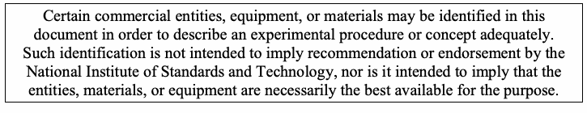
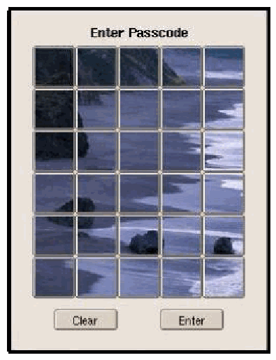
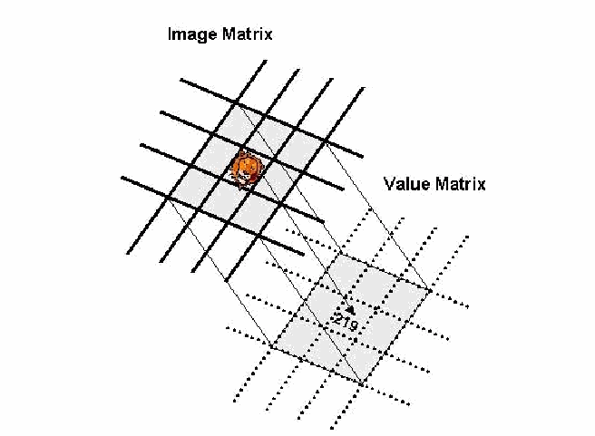

NIST IR 7030 日本語訳
英語タイトル : Picture Password: A Visual Login Technique for Mobile Devices日本語タイトル : Picture Password：モバイルデバイス向けの視覚的ログイン技術
公開日 : 2003-07-01
原文URL : https://csrc.nist.gov/pubs/ir/7030/final
原本 PDF : https://doi.org/10.6028/NIST.IR.7030
訳文 : 有志による非公式の日本語訳（AI による翻訳とレビュー）。全 138 段落のうち 136 段落を翻訳済み（原文取得日 : 2026-10-31）
[要約] NIST IR 7030 は、携帯情報端末（PDA）などのハンドヘルドデバイスに対して利用者を認証する汎用的な仕組みとして、Picture Password と呼ぶ視覚的ログイン技術を説明した論文です。根底にある考え方は、画像の記憶想起は利用者にとって容易で自然な認証方法であり、組織のポリシーを遵守するうえでの大きな障壁を取り除くというものです。Picture Password の特徴には、スタイルに依存した画像の選択、パスワードの再利用、組み込み型のソルト付与があり、ハンドヘルドデバイスにおける知識ベース認証の多くの問題を克服するとしています。画像の選択、パスワードの形成と再利用、パスワードの強度、仕組みの保護、実装、関連研究を順に取り上げ、ノートブックやワークステーションなどにも適しているとしています。
［NIST のロゴ。公的な標章のため、この非公式サイトには掲載していません。原本 PDF を参照してください。］
NISTIR 7030
NISTIR 7030
Picture Password: A Visual Login Technique for Mobile Devices
Picture Password: モバイルデバイス向けの視覚的ログイン技術
Wayne Jansen
Wayne Jansen
Serban Gavrila
Serban Gavrila
Vlad Korolev
Vlad Korolev
Rick Ayers
Rick Ayers
Ryan Swanstrom
Ryan Swanstrom
NISTIR 7030
NISTIR 7030
Picture Password: A Visual Login Technique for Mobile Devices
Picture Password: モバイルデバイス向けの視覚的ログイン技術
Wayne Jansen
Wayne Jansen
Serban Gavrila
Serban Gavrila
Vlad Korolev
Vlad Korolev
Rick Ayers
Rick Ayers
Ryan Swanstrom
Ryan Swanstrom

COMPUTER SECURITY
Computer Security Division Information Technology Laboratory National Institute of Standards and Technology Gaithersburg, MD 20988-8930
コンピューターセキュリティ部門 情報技術研究所 国立標準技術研究所 Gaithersburg, MD 20988-8930
July 2003
2003年7月
U.S. Department of Commerce Donald L. Evans, Secretary
米国商務省 Donald L. Evans 長官
Technology Administration Phillip J. Bond, Under Secretary of Commerce for Technology
技術管理局 Phillip J. Bond、商務次官（技術担当）
National Institute of Standards and Technology Arden L. Bement, Jr., Director
国立標準技術研究所 Arden L. Bement, Jr.、所長
Reports on Computer Systems Technology
コンピューターシステム技術に関する報告書
The Information Technology Laboratory (ITL) at the National Institute of Standards and Technology (NIST) promotes the U.S. economy and public welfare by providing technical leadership for the Nation’s measurement and standards infrastructure. ITL develops tests, test methods, reference data, proof of concept implementations, and technical analysis to advance the development and productive use of information technology. ITL’s responsibilities include the development of technical, physical, administrative, and management standards and guidelines for the cost-effective security and privacy of sensitive unclassified information in Federal computer systems. This Interagency Report discusses ITL’s research, guidance, and outreach efforts in computer security, and its collaborative activities with industry, government, and academic organizations.
国立標準技術研究所（NIST）の情報技術研究所（ITL）は、国の計測・標準の基盤に対して技術面での指導力を発揮することにより、米国の経済と公共の福祉を促進しています。ITL は、情報技術の開発と有効な活用を推進するため、試験、試験方法、参照データ、概念実証の実装、技術分析を開発しています。ITL の責務には、連邦政府のコンピューターシステムにおける機微な非機密情報のセキュリティとプライバシーを費用対効果よく確保するための、技術的、物理的、管理的、運営的な標準およびガイドラインの策定が含まれます。この省庁間報告書は、コンピューターセキュリティに関する ITL の研究、ガイダンス、アウトリーチの取り組み、ならびに産業界、政府、学術機関との共同活動について論じています。
National Institute of Standards and Technology Interagency Report 16 pages (2003)
国立標準技術研究所 省庁間報告書 16ページ（2003年）
Certain commercial entities, equipment, or materials may be identified in this document in order to describe an experimental procedure or concept adequately. Such identification is not intended to imply recommendation or endorsement by the National Institute of Standards and Technology, nor is it intended to imply that the entities, materials, or equipment are necessarily the best available for the purpose.
原本PDFの抜粋画像

本書では、実験の手順や概念を適切に説明するため、特定の商業的な事業体、機器、または材料を挙げている場合があります。このような記載は、国立標準技術研究所による推奨や支持を意味するものではなく、それらの事業体、材料、機器が当該目的に利用できる最良のものであることを意味するものでもありません。
Table of Contents
目次
Picture Password: A Visual Login Technique for Mobile Devices
Picture Password: モバイルデバイス向けの視覚的ログイン技術
Abstract: Adequate user authentication is a persistent problem, particularly with handheld devices such as Personal Digital Assistants (PDAs), which tend to be highly personal and at the fringes of an organization's influence. Yet, these devices are being used increasingly in corporate settings where they pose a security risk, not only by containing sensitive information, but also by providing the means to access such information over wireless network interfaces. User authentication is the first line of defense for a lost or stolen PDA. However, motivating users to enable simple PIN or password mechanisms and periodically update their authentication information is a constant struggle. This paper describes a general-purpose mechanism for authenticating a user to a PDA using a visual login technique called Picture Password. The underlying rationale is that image recall is an easy and natural way for users to authenticate, removing a serious barrier to compliance with organizational policy. Features of Picture Password include style dependent image selection, password reuse, and embedded salting, which overcome a number of problems with knowledge-based authentication for handheld devices. Though designed specifically for handheld devices, Picture Password is also suitable for notebooks, workstations, and other computational devices.
概要: 適切なユーザー認証は長年の課題であり、特に携帯情報端末（PDA）のようなハンドヘルドデバイスで顕著です。これらのデバイスはきわめて個人的に使われる傾向があり、組織の影響力が及びにくい領域にあります。それでも、企業環境での利用が増えており、機微な情報を保持しているだけでなく、無線ネットワークインターフェースを介してその情報にアクセスする手段も提供するため、セキュリティ上のリスクとなっています。ユーザー認証は、PDA の紛失や盗難に対する最初の防衛線です。しかし、ユーザーに簡単な PIN またはパスワードの仕組みを有効にしてもらい、認証情報を定期的に更新してもらうよう促すことは、絶え間ない課題です。本稿では、Picture Password と呼ばれる視覚的ログイン技術を用いて、PDA 上でユーザーを認証する汎用的な仕組みを説明します。その根底にある考え方は、画像を思い出すことはユーザーにとって容易で自然な認証方法であり、組織のポリシー遵守に対する重大な障壁を取り除くというものです。Picture Password の特徴には、スタイルに応じた画像選択、パスワードの再利用、組み込み型のソルト付与があり、ハンドヘルドデバイスにおける知識ベース認証の多くの問題を克服します。ハンドヘルドデバイス向けに特別に設計されていますが、ノートブック、ワークステーション、その他の計算機器にも適しています。
Introduction
はじめに
The trend toward a highly mobile workforce has spurred the acquisition of handheld devices such as Personal Digital Assistants (PDAs) at an ever-increasing rate. These devices offer productivity tools in a compact form and are quickly becoming a necessity in today's business environment. Manufacturers produce handheld devices using a broad range of hardware and software. Handheld devices are characterized by small physical size, limited storage and processing power, and the means for synchronizing data with a more capable notebook or desktop computer.
モバイル中心の労働力へと向かう傾向により、携帯情報端末（PDA）などのハンドヘルドデバイスの導入がますます速いペースで進んでいます。これらのデバイスは、生産性向上のためのツールをコンパクトな形で提供し、今日のビジネス環境で急速に必需品となりつつあります。製造者は、幅広いハードウェアとソフトウェアを用いてハンドヘルドデバイスを製造しています。ハンドヘルドデバイスの特徴は、物理的なサイズが小さいこと、記憶容量と処理能力が限られていること、そしてより高性能なノートブックまたはデスクトップコンピューターとデータを同期する手段を備えていることです。
Unlike desktops and notebook computers, handheld devices typically support a set of interfaces that are oriented toward user mobility. Usually they come equipped with a touch screen and a microphone, but lack a keyboard. One or more wireless interfaces, such as infrared or radio, (e.g., Bluetooth, WiFi, GSM/GPRS) are also built-in for wireless communication over limited distances to other devices and network access points. Most handheld devices can also send and receive electronic mail and browse the Internet via both wired and wireless interfaces. While such devices have their limitations, they are nonetheless extremely useful in managing appointments and contact information, reviewing documents, corresponding via electronic mail, delivering presentations, and accessing corporate data. Moreover, because of their relatively low cost, they are becoming ubiquitous within most organizations.
デスクトップやノートブックコンピューターと異なり、ハンドヘルドデバイスは通常、ユーザーの移動性を重視したインターフェース群をサポートしています。通常、タッチスクリーンとマイクロフォンを備えていますが、キーボードはありません。また、赤外線や無線（Bluetooth、WiFi、GSM/GPRS など）といった 1 つ以上の無線インターフェースが内蔵されており、他のデバイスやネットワークアクセスポイントとの限られた距離での無線通信や、ネットワークへのアクセスに使われます。ほとんどのハンドヘルドデバイスは、有線と無線の両方のインターフェースを通じて、電子メールの送受信やインターネットの閲覧もできます。このようなデバイスには制約がありますが、それでも、予定や連絡先の管理、文書の閲覧、電子メールでのやり取り、プレゼンテーションの実施、企業データへのアクセスに非常に役立ちます。さらに、比較的低コストであるため、ほとんどの組織で広く普及しています。
From an authentication perspective, several issues loom over the use of such device, including the following items:
認証の観点から、このようなデバイスの使用には、次のような問題がいくつかあります。
•While handheld devices increasingly retain sensitive information over time and become networked to access wireless services and organizational intranets, some users may not recognize the associated security implications.
•ハンドヘルドデバイスは、時間の経過とともに機微な情報を保持することが増え、無線サービスや組織のイントラネットにアクセスするためにネットワークに接続されるようになっていますが、これに伴うセキュリティ上の意味を認識していないユーザーもいます。
•Because of their small size, handheld devices may be left unattended temporarily, lost, or stolen.
•ハンドヘルドデバイスは小型であるため、一時的に放置されたり、紛失したり、盗まれたりすることがあります。
•User authentication may not be enable, a common default mode, exposing the contents of the device to anyone who possesses it.
•ユーザー認証が有効にされていない場合があります（これは一般的な既定の状態です）。その場合、デバイスの内容は、それを所持する誰にでも露出します。
•Even if user authentication is enabled, the authentication mechanism may be weak (e.g., a four-digit PIN) or easily circumvented [Kin01].
•ユーザー認証が有効になっていても、認証の仕組みが脆弱な場合（4 桁の PIN など）や、容易に回避される場合があります [Kin01]。
•Once authentication is enabled, changing the authentication information for knowledge-based mechanisms (e.g., PIN) periodically as its lifetime expires is seldom done on the initiative of the user.
•いったん認証が有効になると、知識ベースの仕組み（PIN など）の認証情報を、その有効期間が満了するのに合わせて定期的に変更することは、ユーザーの自発的な行動としてはほとんど行われません。
Adequate user authentication is the first line of defense for protecting the resources of a handheld device. Currently, many handheld devices come with a four-digit Personal Identification Number (PIN) and a numerical entry pad consisting of the digits 0-9 as a means for user authentication. Because of their limited length and alphabet, PINs may be susceptible to shoulder surfing or systematic trial-and-error attacks. Passwords offer a significant improvement over PINS in both length of entry string and size of alphabet. Some handheld devices, such as PDAs, support the character-by-character input of traditional alphanumeric passwords via the touch screen, using either handwriting recognition or a virtual keyboard window.
適切なユーザー認証は、ハンドヘルドデバイスの資源を保護するための第一の防御手段です。現在、多くのハンドヘルドデバイスには、ユーザー認証の手段として、4 桁の個人識別番号（PIN）と、数字 0〜9 からなるテンキーが備わっています。長さと文字種が限られているため、PIN は、ショルダーサーフィンや体系的な試行錯誤による攻撃に対して脆弱な場合があります。パスワードは、入力文字列の長さと文字種の数の両面で PIN を大きく改善します。PDA などの一部のハンドヘルドデバイスは、手書き文字認識または仮想キーボードウィンドウを使って、タッチスクリーン上で従来の英数字パスワードを 1 文字ずつ入力できます。
The strength of password mechanisms lies in the large set of combinations of character strings possible, from which an intruder has to identify the exact one needed to impersonate an authorized user. For example, for an eight-character string populated from the set of 95 printable ASCII keyboard characters, the number of possible character strings is \(95^{8}\). While passwords are an improvement over PINs, they can be difficult to remember and prone to input errors when entered via a touch screen. Thus, users tend to use easily remembered character strings such as “password” to simplify authentication. When the password expires, its replacement is often very similar (e.g., p@ssword) [Lee01]. These tendencies significantly reduce the password space and allow an intruder to deduce passwords quickly by systematically applying dictionaries of commonly used strings and password reuse patterns (e.g., password1, password2, etc.) [Mor79, Kle90].
パスワードの仕組みの強みは、取り得る文字列の組み合わせの集合が大きいことにあります。侵入者は、正規ユーザーになりすますために、その中から正確な 1 つを特定しなければなりません。たとえば、印字可能な ASCII キーボード文字 95 種から構成される 8 文字の文字列では、取り得る文字列の数は \(95^{8}\) です。パスワードは PIN より改善されているものの、記憶することが難しく、タッチスクリーンから入力する際には入力ミスが起こりやすい場合があります。そのため、ユーザーは認証を簡単にするため、“password” のような覚えやすい文字列を使う傾向があります。パスワードの有効期限が切れると、その代わりのパスワードも非常によく似たもの（p@ssword など）になることが多くあります [Lee01]。これらの傾向により、パスワード空間は大幅に縮小し、侵入者は、よく使われる文字列の辞書やパスワード再利用のパターン（password1、password2 など）を体系的に適用することで、パスワードを素早く推測できます [Mor79, Kle90]。
To avoid weak or easily broken passwords, organizational policy and procedures compel users to include special, upper case, and numeric characters in their password string, to avoid common or easily guessed strings, and to update passwords regularly (e.g., every 90 days) with completely different strings. Policy and procedures may also be backed up by technical controls that force periodic updates, and either screen out unacceptable passwords selected by users or supply acceptable passwords automatically for users [Spa92]. Unfortunately, the measures put in place to ensure strong, but typically complex and meaningless passwords, frequently result in users writing them down and keeping them near the computer system to recall quickly. This behavior is fueled further by the numerous systems that require passwords for authentication.
弱いパスワードや容易に破られるパスワードを避けるため、組織のポリシーと手順は、ユーザーに対して、パスワード文字列に記号、大文字、数字を含めること、一般的な文字列や容易に推測される文字列を避けること、そして定期的に（90 日ごとなど）まったく異なる文字列へ更新することを求めています。ポリシーと手順は、定期的な更新を強制し、ユーザーが選んだ受け入れ不可能なパスワードを除外するか、ユーザーに代わって受け入れ可能なパスワードを自動的に提供する技術的な統制によって裏付けられる場合もあります [Spa92]。残念ながら、強力ではあるものの通常は複雑で意味を持たないパスワードを確保するために導入された対策は、ユーザーがそれを書き留め、すぐに思い出せるようにコンピューターシステムの近くに置いておくという結果をしばしば招いています。この行動は、認証にパスワードを要求する多数のシステムの存在によって、さらに助長されています。
The mechanism described in this paper authenticates a user to a PDA using a visual login technique called Picture Password. Picture Password authenticates a user through the selection of images displayed on a handheld device. As seen with screen savers, graphic screen backgrounds, or application skins, products that employ visual content appeal to a large class of users. Having the ability to tailor the display interface with personal images, gives users a sense of freedom and control over what might otherwise be considered an imposition. Thus, an image-based authentication technique, if designed carefully, has the potential to engage users to employ the mechanism and indulge periodic updates of the authentication information.
本稿で説明する仕組みは、Picture Password と呼ばれる視覚的ログイン技術を用いて、PDA に対してユーザーを認証します。Picture Password は、ハンドヘルドデバイスに表示される画像の選択を通じてユーザーを認証します。スクリーンセーバー、画面の背景のグラフィック、アプリケーションのスキンに見られるように、視覚的なコンテンツを用いる製品は、幅広い層のユーザーに受け入れられています。表示インターフェースを個人の画像でカスタマイズできることは、本来は押しつけと受け取られかねないものに対して、自由と主導権の感覚をユーザーに与えます。したがって、画像ベースの認証技術は、注意深く設計すれば、ユーザーがその仕組みを使い、認証情報を定期的に更新することを受け入れるよう促す可能性があります。
Overview
概要
For any authentication mechanism to gain user acceptance, it must be convenient to use and match the capabilities of the device. Difficulties due to cumbersome attachments, slow performance, or error-prone user interfaces are typically not tolerated. The aim then is to devise authentication mechanisms for PDAs that are well suited to the typical interfaces and capabilities supported by such devices. Our work has focused on higher-end expandable devices aimed at corporate users: the Compaq/HP iPAQ H series of devices running the Familiar Linux distribution and Opie and the Sharp Zaurus SL-5X00 series of devices with Lineo’s embedded Linux and Qtopia. Both families of devices are approximately the same dimensions as a pocket-size agenda, equipped with a one-quarter VGA touch screen, use processors running at 200 MHz and higher, and have comparable amounts of read only flash memory (32MB or more) and random access memory (64MB or more). Linux distributions are supported on a number of other PDAs including the CDL Paron, IBM e-LAP, and Yopy Gmate.
どのような認証の仕組みも、ユーザーに受け入れられるためには、使いやすく、デバイスの能力に合っていなければなりません。扱いにくい付属品、遅い動作、エラーを起こしやすいユーザーインターフェースによる困難は、通常は容認されません。したがって、目標は、PDA が備える典型的なインターフェースと能力に適した認証の仕組みを考案することです。私たちの作業は、企業ユーザーを対象とした上位機種の拡張可能なデバイスに焦点を当てました。具体的には、Familiar Linux ディストリビューションと Opie を実行する Compaq/HP iPAQ H シリーズのデバイスと、Lineo の組み込み Linux と Qtopia を搭載した Sharp Zaurus SL-5X00 シリーズのデバイスです。どちらのデバイスファミリーも、ポケットサイズの手帳とほぼ同じ寸法で、4 分の 1 VGA のタッチスクリーンを備え、200 MHz 以上で動作するプロセッサーを使用し、読み取り専用のフラッシュメモリ（32MB 以上）とランダムアクセスメモリ（64MB 以上）をほぼ同程度の量で備えています。Linux ディストリビューションは、CDL Paron、IBM e-LAP、Yopy Gmate など、他の多くの PDA でもサポートされています。
The Picture Password authentication mechanism has two distinct parts: the initial password enrollment and subsequent password verification. During enrollment, a user selects a theme identifying the thumbnail photos to be applied and then registers a sequence of thumbnail images that are used to derive the associated password. When the device is powered on or booted up, the user must enter the currently enrolled image sequence for verification to gain access to the device. After a successful authentication, the user may change the password, selecting a new sequence and/or theme.
Picture Password 認証の仕組みは、最初のパスワード登録と、その後のパスワード検証という 2 つの異なる部分から成ります。登録時に、ユーザーは適用するサムネイル写真を特定するテーマを選択し、次に、関連するパスワードの導出に使われるサムネイル画像の並びを登録します。デバイスの電源を入れるか起動するときに、ユーザーは、デバイスにアクセスするために、現在登録されている画像の並びを検証用に入力しなければなりません。認証に成功した後、ユーザーは新しい並びやテーマ、またはその両方を選択して、パスワードを変更できます。
Picture Password offers benefits over PINs and textual passwords, especially for the visually inclined user. As with textual passwords, a similar password length and alphabet size is used. However, instead of having to memorize and enter a string of random-like alphanumeric characters, a sequence of thumbnail images must be selected and retained. Experimental results suggest that human visual memory is well suited to such visual and cognitive tasks [Mel01, Gol71]. Moreover, an image sequence that has some meaning to the individual user (e.g., logos of sport’s league teams in order of preference, one’s family members in order of birth or vacation spots in order visited) can be used. If forgotten, the sequence may be reconstructed from the inherent visual cues. The display interface presents images in an easy-to-select size, reducing error entries. The underlying mechanism, which handles random character code assignment to images, password composition, enrollment, and verification, is completely hidden from the user.
Picture Password は、PIN やテキストパスワードと比べて、特に視覚的な情報を好むユーザーに利点があります。テキストパスワードと同様に、同程度のパスワード長と文字種数が使われます。ただし、ランダムのような英数字の文字列を記憶して入力する代わりに、サムネイル画像の並びを選択して覚えておかなければなりません。実験結果は、人間の視覚記憶がこのような視覚的・認知的なタスクによく適していることを示唆しています [Mel01, Gol71]。さらに、ユーザー個人にとって何らかの意味を持つ画像の並び（たとえば、好きな順に並べたスポーツリーグのチームのロゴ、生まれた順に並べた家族、訪れた順に並べた休暇の行き先など）を使うことができます。忘れた場合でも、並びは、そこに備わる視覚的な手がかりから再構成できます。表示インターフェースは、選択しやすい大きさで画像を提示するため、入力ミスが減ります。画像へのランダムな文字コードの割り当て、パスワードの構成、登録、検証を扱う基盤の仕組みは、ユーザーからは完全に隠されています。
The presentation of images to the user for selection is based on tiling a portion of the user’s graphical interface window. Various ways exist to tile a surface with both regular and irregular patterns. Picture Password uses squares of identical size (40 x 40 pixels), grouped into a 5 x 6 matrix of elements. Cells of this size provide a clear recognizable image that is easily selectable for most users. Figure 1 illustrates the PDA screen image for the Cats & Dogs theme, one of three predefined themes. The message area at the top of the window guides the user’s actions, while the display area in the center displays thumbnail images selectable with a single tap of the stylus. The controls at the bottom allow the user to clear out any incorrect input entered or submit the entered image sequence for verification. Selecting and submitting the correct sequence of thumbnail images authenticates the user to the device.
ユーザーが選択するための画像の提示は、ユーザーのグラフィカルインターフェースウィンドウの一部をタイル状に区切ることに基づいています。平面を規則的なパターンと不規則なパターンの両方でタイル状に敷き詰める方法は、さまざまに存在します。Picture Password は、同一サイズ（40 x 40 ピクセル）の正方形を使い、5 x 6 の行列の要素としてグループ化します。このサイズのセルは、はっきりと認識できる画像となり、ほとんどのユーザーにとって容易に選択できます。図 1 は、あらかじめ定義された 3 つのテーマの 1 つである Cats & Dogs テーマの PDA の画面イメージを示しています。ウィンドウ上部のメッセージ領域はユーザーの操作を案内し、中央の表示領域には、スタイラスで 1 回タップするだけで選択できるサムネイル画像が表示されます。下部のコントロールでは、誤って入力した内容を消去したり、入力した画像の並びを検証のために送信したりできます。正しいサムネイル画像の並びを選択して送信すると、ユーザーはデバイスに対して認証されます。
［政府の標章が写っている図。公的な標章のため、この非公式サイトには掲載していません。原本 PDF を参照してください。］
Figure 1: Picture Password Cats and Dogs Theme
図 1: Picture Password の Cats and Dogs テーマ
Picture Password allows users flexibility in choosing a predefined theme that suits their personality and taste or providing their own set of images for display. All thumbnail images must be in a predefined digital format, which can be created using an image manipulation tool such as Photoshop or GIMP. Besides a random layout of individual thumbnail images, several thumbnail images may be structured to compose a single composite image as in a mosaic, where each thumbnail image contributes a portion to some larger image. Figure 2 illustrates the Sea & Shore theme, where all 30 thumbnail images in the display area form a single contiguous image.
Picture Password では、ユーザーは、自分の個性や好みに合う、あらかじめ定義されたテーマを選ぶことも、表示する画像一式を自分で用意することもでき、柔軟に対応できます。すべてのサムネイル画像は、あらかじめ定義されたデジタル形式でなければならず、Photoshop や GIMP などの画像加工ツールで作成できます。個々のサムネイル画像をランダムに配置するほかに、複数のサムネイル画像を組み合わせて 1 枚の合成画像を構成することもできます。これはモザイクのように、各サムネイル画像がより大きな画像の一部を担うものです。図 2 は Sea & Shore テーマを示しており、表示領域の 30 枚のサムネイル画像すべてが 1 枚の連続した画像を形成しています。

Picture Password のログイン画面の画面例です。上部に「Enter Passcode」（パスコードを入力）の表題があり、その下に 5 x 6 の 30 個のサムネイルボタンが並び、全体で岩のある海岸と波の 1 枚の写真になっています。下部に「Clear」（消去）と「Enter」（入力）のボタンがあります。
Figure 2: Sea & Shore Theme
図 2: Sea & Shore テーマ
Image Selection
画像の選択
A perplexing problem faced in Picture Password was ensuring that its password space would be comparable to that of alphanumeric passwords. The size of the image matrix limits the effective alphabet size to only 30 elements, assuming a one-to-one mapping, which in turn results in weak passwords. For example, an eight-entry image sequence, the number of possible password strings would be only \(30^{8}\). Therefore, several ways to increase the alphabet size were considered. They included allowing passwords to be composed with thumbnail elements from all of the three available themes (90 elements total) and providing more images per theme, by either using smaller-sized images, or adding a feature to zoom up larger composite images from each thumbnail image. Each of these approaches had serious drawbacks. Using thumbnail images from all three themes would require more difficult navigation for the user. A denser set of images would mean less tolerance for selections and a higher rate of input errors. Zooming up a thumbnail image to a larger composite image would require more user interaction when selecting images and greater complexity in creating and handling themes.
Picture Password で直面した厄介な問題は、そのパスワード空間を英数字パスワードに匹敵するものにすることでした。画像行列の大きさにより、1 対 1 の対応付けを仮定すると、実効的な文字種数は 30 要素だけに制限され、その結果、弱いパスワードになります。たとえば、画像の並びが 8 個である場合、取り得るパスワード文字列の数は \(30^{8}\) にすぎません。そこで、文字種数を増やす方法がいくつか検討されました。それらには、利用可能な 3 つのテーマすべて（合計 90 要素）のサムネイル要素でパスワードを構成できるようにすること、そして、より小さな画像を使うか、各サムネイル画像からより大きな合成画像へズームする機能を追加することによって、テーマごとの画像を増やすことが含まれます。これらの方法にはそれぞれ深刻な欠点がありました。3 つのテーマすべてのサムネイル画像を使うと、ユーザーにとって操作がより難しくなります。画像を密に配置すると、選択の許容範囲が狭まり、入力ミスの率が高くなります。サムネイル画像をより大きな合成画像へズームすると、画像を選択する際のユーザー操作が増え、テーマの作成と取り扱いが複雑になります。
The main criterion for selecting among various alternatives was to maintain the simplicity of the user interface, keeping it as easy to use as possible. Our solution was to add a second method or style for choosing thumbnail elements. Besides selecting individual thumbnail elements as before, one could now select two thumbnail elements together to compose a new alphabet element. The concept is akin to using a shift key to select uppercase or special characters on a traditional keyboard, but in this context each thumbnail element serves as a shift key for every other element, including itself. With this addition, the resulting alphabet size expands from 30 elements (i.e., singly selected keys) to 930 elements (i.e., 30 singly selected keys plus 30 x 30 composite keys), which compares favorably to the 95 printable ASCII characters available from a traditional keyboard. Several ways exist to select a pair of buttons and link them in composing an alphabet element. Drag-and-drop is perhaps the most obvious method, but not typically supported by all handheld device windowing systems. Another, more generic selection method is choosing the first thumbnail image by picking and holding the stylus there, highlighting the selection, and then completing the pair by picking the second button image in the normal fashion.
さまざまな選択肢の中から選ぶ際の主な基準は、ユーザーインターフェースの単純さを保ち、できるだけ使いやすくしておくことでした。私たちの解決策は、サムネイル要素を選ぶための 2 つ目の方法、つまりスタイルを追加することでした。従来どおり個々のサムネイル要素を選択するほかに、2 つのサムネイル要素をまとめて選択して、新しい文字種の要素を構成できるようになりました。この考え方は、従来のキーボードで Shift キーを使って大文字や特殊文字を選択することに似ていますが、ここでは、各サムネイル要素が、自分自身を含むほかのすべての要素に対する Shift キーとして働きます。この追加により、結果として得られる文字種数は、30 要素（すなわち、単独で選択するキー）から 930 要素（すなわち、単独で選択する 30 個のキーに 30 x 30 個の合成キーを加えたもの）へと拡大し、これは従来のキーボードから利用できる 95 種の印字可能な ASCII 文字と比べても遜色ありません。2 つのボタンを選択し、それらを結び付けて文字種の要素を構成する方法はいくつかあります。ドラッグアンドドロップはおそらく最も分かりやすい方法ですが、すべてのハンドヘルドデバイスのウィンドウシステムで一般にサポートされているわけではありません。もう 1 つの、より汎用的な選択方法は、最初のサムネイル画像をスタイラスで選んだまま押さえて選択を強調表示させ、次に 2 番目のボタン画像を通常の方法で選んでペアを完成させるというものです。
Having someone observe the user entering a password and using that information to gain entry is a concern with any password system. Fortunately, the screens of PDAs and most handheld devices have a narrow viewing angle. That property, combined with their small size, makes it relatively easy to shield data entry with one’s body. Nevertheless, observation is a concern. As a safeguard, Picture Password gives users the option to have images shuffled automatically between authentication attempts, where appropriate. Supporting two different styles of selection also is a safeguard, since it makes it difficult for an observer to glean both the entire image sequence and the selection style for each image in the sequence.
ユーザーがパスワードを入力するところを誰かが観察し、その情報を使って侵入することは、あらゆるパスワードシステムに共通の懸念です。幸い、PDA やほとんどのハンドヘルドデバイスの画面は視野角が狭くなっています。この特性は、本体が小さいことと相まって、データ入力を自分の体で隠すことを比較的容易にします。それでも、観察は懸念事項です。防護策として、Picture Password は、必要に応じて、認証の試行ごとに画像を自動的にシャッフルするオプションをユーザーに提供します。2 種類の選択スタイルをサポートすることも防護策になります。観察者が、画像の並び全体と、並びの中の各画像の選択スタイルの両方を読み取ることが難しくなるためです。
Password Formation and Reuse
パスワードの構成と再利用
Organizational policies typically require users’ passwords to expire and be changed completely after some period of use. This practice keeps a persistent intruder from cracking a password over some indefinite lifetime of use. Though effective, password expiration is also a nuisance for the user, who follows this practice on numerous systems and accounts, and continually must forget old and memorize new passwords. The user would instead prefer to continue using the same image sequence indefinitely.
組織のポリシーは通常、ユーザーのパスワードに有効期限を設け、一定期間の使用後にまったく新しいものへ変更することを求めます。この慣行は、粘り強い侵入者が、無期限に使われるパスワードを解読することを防ぎます。パスワードの有効期限切れは有効ですが、数多くのシステムやアカウントでこの慣行に従い、絶えず古いパスワードを忘れて新しいパスワードを記憶しなければならないユーザーにとっては、煩わしいものでもあります。ユーザーは、代わりに同じ画像の並びを無期限に使い続けることを望みます。
One solution for password reuse is to allow the same image sequence to be used after it expires, but have the image sequence generate a completely new password value. By decoupling images from alphabet, numerous distinct mappings between those respective sets of elements are possible. To enable password reuse, the authentication mechanism has only to select a mapping that results in a different password value to be generated for the same image sequence.
パスワードを再利用するための 1 つの解決策は、有効期限が切れた後も同じ画像の並びを使えるようにしつつ、その画像の並びからまったく新しいパスワード値を生成させることです。画像と文字種を切り離すことで、それぞれの要素の集合の間に、数多くの異なる対応付けが可能になります。パスワードの再利用を可能にするには、認証の仕組みは、同じ画像の並びに対して異なるパスワード値が生成される対応付けを選ぶだけで済みます。
As shown in Figure 3, during initial enrollment or a subsequent reenrollment, for each thumbnail element of the image matrix, Picture Password randomly assigns a distinct value from the full range of possible alphabet values to form a value matrix with the same dimensions. While the set of image elements is fixed at 30, the set of basic alphabet values from which the 30 needed are drawn can be significantly larger. Thus, the elements of the value matrix contain the basic alphabet used to compute the password, but are independent from the image matrix.
図 3 に示すように、最初の登録時またはその後の再登録時に、Picture Password は、画像行列の各サムネイル要素に対して、取り得るすべての文字種の値の範囲から異なる値をランダムに割り当て、同じ大きさの値行列を形成します。画像要素の集合は 30 個に固定されていますが、必要な 30 個を取り出す元となる基本的な文字種の値の集合は、それよりはるかに大きくできます。したがって、値行列の要素には、パスワードの計算に用いる基本的な文字種が格納されますが、これは画像行列から独立しています。
The mapping of thumbnail element to value element remains constant from one authentication attempt to another and changed only during reenrollment. Because values are randomly associated with each thumbnail element of the image matrix during reenrollment, selecting the same theme and sequence of thumbnails repeatedly should produce a completely different password value. As an added measure, mappings that produce the same password value as the one previously enrolled can be rejected during reenrollment.
サムネイル要素から値要素への対応付けは、認証の試行を通じて一定のままで、再登録時にのみ変更されます。再登録時に、値は画像行列の各サムネイル要素にランダムに関連付けられるため、同じテーマとサムネイルの並びを繰り返し選択しても、まったく異なるパスワード値が生成されるはずです。追加の対策として、すでに登録されているパスワード値と同じ値が生成される対応付けは、再登録時に拒否できます。

遠近法で描いた 2 つの格子が重なる図です。上の実線の格子には「Image Matrix」（画像行列）のラベルがあり、1 つのセルに小さな猫の画像があります。下の点線の格子には「Value Matrix」（値行列）のラベルがあり、対応するセルどうしが線で結ばれ、猫の画像に対応するセルには値「219」が入っています。
Figure 3: Image and Value Matrices
図 3: 画像行列と値行列
The sequence of thumbnail elements selected by the user in either an enrollment or authentication attempt governs password formation. The mapped value of a single image selection can be directly applied, while the two mapped values of a paired image selection must first be composed into a single value. For example, if single-byte, non-zero, unsigned integers comprise the set of 30 basic alphabet values, a single image selection could be the pair of bytes (0, \(\mathrm{VM}_j\)), and a paired image selection could be the pair of bytes (\(\mathrm{VM}_k\), \(\mathrm{VM}_j\)), where \(\mathrm{VM}_j\) represents either the alphabet value in the value matrix for a single image selected or the first image selected in a paired image selection, and \(\mathrm{VM}_k\) represents the alphabet value for the second image in a paired image selection.
登録または認証の試行においてユーザーが選択したサムネイル要素の並びが、パスワードの構成を決めます。単独の画像選択に対応付けられた値はそのまま適用できますが、ペアの画像選択に対応付けられた 2 つの値は、まず 1 つの値に合成しなければなりません。たとえば、30 個の基本的な文字種の値が、1 バイトのゼロでない符号なし整数の集合で構成されている場合、単独の画像選択は、バイトのペア (0, \(\mathrm{VM}_j\)) とし、ペアの画像選択は、バイトのペア (\(\mathrm{VM}_k\), \(\mathrm{VM}_j\)) とすることができます。ここで、\(\mathrm{VM}_j\) は、単独で選択された画像、またはペアの画像選択で最初に選択された画像に対する、値行列内の文字種の値を表し、\(\mathrm{VM}_k\) は、ペアの画像選択における 2 番目の画像の文字種の値を表します。
Once the thumbnail images for an image sequence have their alphabet values resolved, those values are concatenated together, in the sequence the images were selected, to form the clear text password. Picture Password then applies a one-way cryptographic hash to the resulting string iteratively to form the password. The NIST Secure Hash Algorithm (SHA) is used to compute the cryptographic hash and results in a 20-byte binary value. The number of iterations to apply the hash algorithm is controlled by a variable to allow the work effort to be adjusted to the level of security needed. The user’s password is never maintained in unencrypted form on the device. Instead, only the hash result is retained during enrollment and used later during verification to compare against the hash result from any subsequent authentication attempt.
画像の並びを構成するサムネイル画像の文字種の値が解決されると、それらの値は、画像が選択された順に連結され、平文のパスワードが形成されます。次に Picture Password は、得られた文字列に一方向の暗号ハッシュを繰り返し適用して、パスワードを形成します。暗号ハッシュの計算には NIST の Secure Hash Algorithm（SHA）が使われ、結果は 20 バイトのバイナリ値になります。ハッシュアルゴリズムを適用する反復回数は変数で制御されるため、作業量を必要なセキュリティレベルに合わせて調整できます。ユーザーのパスワードは、デバイス上で暗号化されていない形では決して保持されません。その代わり、登録時にはハッシュ結果だけが保持され、後の検証時に、その後の認証の試行によるハッシュ結果と比較するために使われます。
While a visual login technique by its very nature avoids dictionary attacks associated with textual passwords, it may be possible for an intruder to compile commonly used set of image selections (e.g. location-based sequences such as the four corners or main diagonal of the image matrix) and use them in an attack. As a countermeasure to an intruder directly applying a dictionary of commonly used passwords, the clear text password value may be prepended with a random value, commonly referred to as a salt, before the hash is iteratively applied. This step significantly increases the work factor for the intruder, in relationship to the size of the salt value that is used and whether both a public and a secret salt are involved [Man96, Aba97].
視覚的ログイン技術は、その性質上、テキストパスワードに関連する辞書攻撃を回避しますが、侵入者が、よく使われる画像選択の集合（たとえば、画像行列の四隅や主対角線のような位置に基づく並び）をまとめ、それを攻撃に使う可能性があります。よく使われるパスワードの辞書を侵入者が直接適用することへの対策として、ハッシュを繰り返し適用する前に、一般にソルトと呼ばれるランダムな値を平文のパスワード値の前に付加します。この手順は、使用するソルト値の大きさ、および公開ソルトと秘密ソルトの両方を用いるかどうかに応じて、侵入者に必要な計算量を大幅に増加させます [Man96, Aba97]。
One additional use for the value matrix is to hold individual salt values for each element of the basic alphabet. Rather than prepending the resulting clear text value of the password with a collective salt value, salting can be done continuously as entries in the value matrix are used to generate a password value. This method of salting takes advantage of any unused memory within the value matrix, in situations where the memory allocated for each value matrix element is sufficient to hold both an alphabet value and its associated salt value. Otherwise, additional memory can be allocated to hold the salt component, which can be treated simply as the prefix of an alphabet value. Each time a new password is enrolled, the salt components are populated with random values. This procedure, in effect, creates a new way of salting the password through the embedding of salt values within the alphabet value entries of the value matrix.
値行列のもう 1 つの用途は、基本的な文字種の各要素に対する個別のソルト値を保持することです。パスワードの結果の平文の値の前に共通のソルト値を付加する代わりに、パスワード値を生成するために値行列のエントリを使うたびに、継続的にソルトを付与できます。このソルト付与の方法は、値行列の各要素に割り当てられたメモリが文字種の値とそれに関連するソルト値の両方を保持するのに十分な場合に、値行列内の未使用のメモリを活用します。そうでない場合は、ソルト部分を保持するための追加のメモリを割り当てることができ、ソルト部分は、文字種の値の接頭辞として単純に扱えます。新しいパスワードが登録されるたびに、ソルト部分にはランダムな値が設定されます。この手順は、事実上、値行列の文字種の値のエントリ内にソルト値を埋め込むことによって、パスワードにソルトを付与する新しい方法を生み出します。
Password Strength
パスワードの強度
As mentioned earlier, with 30 thumbnail images to choose, the effective size of the alphabet is 930, (30 + (30*30)). Passwords formed with so large an alphabet space are quite strong. Thus, 7-entry long passwords have \(930^{7}\) possible values for a password space of approximately 6.017009e+20, which is an order of magnitude greater than that for 10-character long, alphanumeric passwords formed from the 95 printable ASCII character set, which is \(95^{10}\) or approximately 5.987369e+19. The general strength relationship between visual passwords formed from a 30-element matrix versus textual passwords formed from the 95 printable ASCII characters is approximately
前述のとおり、選択できるサムネイル画像が 30 個ある場合、実効的な文字種数は 930（30 + (30*30)）です。これほど大きな文字種空間で構成されたパスワードは非常に強力です。したがって、7 個の入力からなるパスワードは \(930^{7}\) 通りの値を取り、パスワード空間は約 6.017009e+20 となります。これは、印字可能な 95 種の ASCII 文字集合から構成される 10 文字の英数字パスワード（\(95^{10}\)、すなわち約 5.987369e+19）より 1 桁大きい値です。30 要素の行列から構成される視覚的パスワードと、印字可能な 95 種の ASCII 文字から構成されるテキストパスワードの間の一般的な強度の関係は、おおよそ次のとおりです。
\[ N_{pp} = \left\lceil \frac{2}{3} * N_{tp} \right\rceil , \]
\[ N_{pp} = \left\lceil \frac{2}{3} * N_{tp} \right\rceil , \]
where \(N_{tp}\) is the required character length for textual password input, \(N_{pp}\) is the corresponding input sequence length required for Picture Password, and \(\lceil x \rceil\) is the “ceiling” function. In simple terms this means that image sequences formed with dual selection styles require approximately one-third less length than that of a traditional alphanumeric password. This presumes, of course, that just as additional keystrokes are needed to select special and capital characters on a keyboard, a comparable number of additional strokes are used when forming an image sequence involving paired image selections. Table 1 gives a comparison of input lengths between the two mechanisms for a range of sizes of password elements. Note that the values in the table presume that just as additional keystrokes are needed to select special and capital characters on a virtual keyboard, a comparable number of additional strokes are used when forming an image sequence involving paired image selections.
ここで、\(N_{tp}\) はテキストパスワード入力に必要な文字数、\(N_{pp}\) は Picture Password に必要な対応する入力列の長さ、\(\lceil x \rceil\) は「天井」関数です。簡単に言えば、2 つの選択スタイルで構成された画像の並びは、従来の英数字パスワードの約 3 分の 1 短い長さで済むということです。これはもちろん、キーボードで特殊文字や大文字を選択するために追加のキー入力が必要になるのと同様に、ペアの画像選択を含む画像の並びを構成するときにも、同程度の追加の操作が使われることを前提としています。表 1 は、パスワード要素のさまざまな大きさについて、2 つの仕組みの入力長を比較したものです。表中の値は、仮想キーボードで特殊文字や大文字を選択するために追加のキー入力が必要になるのと同様に、ペアの画像選択を含む画像の並びを構成するときにも、同程度の追加の操作が使われることを前提としている点に注意してください。
Table 1: Input Length Comparison
表 1: 入力長の比較
| Textual Password Length | 6 | 7 | 8 | 9 | 10 | 11 | 12 |
|---|---|---|---|---|---|---|---|
| Image Sequence Length | 4 | 5 | 6 | 6 | 7 | 7 | 8 |
| テキストパスワードの長さ | 6 | 7 | 8 | 9 | 10 | 11 | 12 |
|---|---|---|---|---|---|---|---|
| 画像の並びの長さ | 4 | 5 | 6 | 6 | 7 | 7 | 8 |
Mechanism Protection
仕組みの保護
Picture Password relies primarily on two forms of authentication information: the cryptographic hash of the password string computed from the enrolled image selection, and the value matrix that maps selected thumbnails to their underlying alphabet values, each containing an embedded salt. The confidentiality and integrity of both pieces of information must be protected by the underlying operating system. At a minimum, this information is safeguarded through strict file access control settings. However, should read access to this information be gained somehow, the authenticating image sequence is inherently resistant to discovery, requiring a difficult and exhaustive brute force effort to uncover.
Picture Password は主に 2 種類の認証情報に依拠しています。1 つは、登録された画像選択から計算されるパスワード文字列の暗号ハッシュ、もう 1 つは、選択されたサムネイルをその基盤となる文字種の値に対応付ける値行列で、どちらにもソルトが埋め込まれています。これら 2 つの情報の機密性と完全性は、基盤となるオペレーティングシステムによって保護されなければなりません。最低限、この情報は、厳格なファイルアクセス制御の設定によって保護されます。ただし、何らかの方法でこの情報への読み取りアクセスが得られたとしても、認証用の画像の並びは本質的に発見されにくく、それを明らかにするには、困難で網羅的なブルートフォースの労力が必要です。
Access controls alone may not provide sufficient protection for all handheld device environments. Other, more subtle, ways exist that an intruder might use to foil the authentication mechanism. The following items list some common threats that should be safeguarded against to minimize the possibility of a successful attack on an implementation of Picture Password:
アクセス制御だけでは、すべてのハンドヘルドデバイス環境で十分な保護を提供できない場合があります。侵入者が認証の仕組みを妨害するために使うかもしれない、より巧妙な方法がほかにも存在します。次の項目は、Picture Password の実装に対する攻撃が成功する可能性を最小限に抑えるために、防護すべき一般的な脅威を挙げたものです。
•Personnel Information Management (PIM) or other applications that run as root by default may be exploited as a potential avenue for gaining access to the authentication information, as well as other information.
•Personnel Information Management（PIM）など、既定で root として動作するアプリケーションは、認証情報やその他の情報にアクセスするための潜在的な経路として悪用される場合があります。
•Program binaries may become compromised and replaced with Trojan versions that capture user input or intermediate clear text forms of the password.
•プログラムのバイナリが危殆化し、ユーザー入力やパスワードの中間的な平文の形を取得するトロイの木馬版に置き換えられる場合があります。
•Program interfaces, system resources, and device interfaces may be manipulated to cause the mechanism to be bypassed completely or to fail in a way such that it does not perform the password computation procedure correctly and is compromised.
•プログラムインターフェース、システム資源、デバイスインターフェースが操作され、仕組みが完全に迂回されたり、パスワード計算の手順が正しく実行されないような形で障害を起こし、危殆化したりする場合があります。
•Spoofing may be used to grab user input either when images are being selected or when the image sequence is being handled.
•スプーフィングが、画像が選択されている間や、画像の並びが処理されている間に、ユーザー入力を奪うために使われる場合があります。
•Savaging or sniffing may be used to obtain user input either when images are being selected, when the image sequence is being handled, or after the authentication mechanism terminates execution.
•盗み見またはスニッフィングが、画像の選択中、画像の並びの処理中、または認証の仕組みの実行終了後に、ユーザー入力を取得するために使われる場合があります。
Implementation
実装
Picture Password was implemented in C++ for a Linux iPAQ PDA, and for the Open Palmtop Integrated Environment (Opie), an open source implementation of the Qtopia graphical environment of TrollTech. The design of the authentication solution involves three main types of components: kernel modifications, authentication handlers, and user interface (UI) components. Figure 4 illustrates the different parts of the solution and the flow of data between them. Note that the design supports multiple authentication mechanisms running in series, whereby each mechanism comprises a matching pair of user interface component and authentication handler. The discussion in this section, however, focuses solely on operating a single authentication mechanism, Picture Password.
Picture Password は、Linux iPAQ PDA 向け、および TrollTech 社の Qtopia グラフィカル環境のオープンソース実装である Open Palmtop Integrated Environment（Opie）向けに、C++ で実装されました。この認証ソリューションの設計には、カーネルの改変、認証ハンドラー、ユーザーインターフェース（UI）コンポーネントという、主に 3 種類のコンポーネントが関わります。図 4 は、ソリューションの各部分と、それらの間のデータの流れを示しています。この設計は、複数の認証の仕組みを直列に実行することをサポートしており、各仕組みは、ユーザーインターフェースコンポーネントと認証ハンドラーの対応するペアで構成される点に注意してください。ただし、本節の議論は、単一の認証の仕組みである Picture Password の動作だけに焦点を当てています。
![Design diagram divided by a horizontal line into "User Space" (top) and "Kernel Space" (bottom). In user space, a box "Opie" contains a box "UI Plug-in" holding "Picture Password UI", "Other UI" and a vertical "Socket Multiplexer". A diamond labeled "Socket" connects the plug-in to "Picture Password Handler" and "Other Handler". "Picture Password Handler" has a two-way arrow to a database cylinder under "Authentication Information"; "Other Handler" connects to a group of a token, a database cylinder and a card. Curved arrows link the multiplexer and both handlers to a funnel-shaped connector on the line, which leads down to the "Kernel" box. In kernel space, "Power on Event" with a triangle points to the kernel.](assets/ir-7030/p0014-figure-01.png)
横線で上の「User Space」（ユーザー空間）と下の「Kernel Space」（カーネル空間）に分けた設計図です。ユーザー空間の「Opie」の枠の中に「UI Plug-in」（UI プラグイン）の枠があり、「Picture Password UI」、「Other UI」（その他の UI）と縦長の「Socket Multiplexer」（ソケット多重化）が入っています。「Socket」（ソケット）のひし形がプラグインと「Picture Password Handler」（Picture Password ハンドラー）・「Other Handler」（その他のハンドラー）をつないでいます。Picture Password ハンドラーは「Authentication Information」（認証情報）のデータベースと双方向の矢印で結ばれ、その他のハンドラーはトークン、データベース、カードの組につながっています。曲線の矢印が多重化部と 2 つのハンドラーを境界線上の漏斗形の接続部に結び、そこから下の「Kernel」（カーネル）の枠に線が伸びています。カーネル空間では「Power on Event」（電源投入イベント）の三角形がカーネルを指しています。
Figure 4: Design Overview
図 4: 設計の概要
The responsibility for determining when authentication is required, by monitoring sleep/wake-up events and signals from the Opie plug-in module, falls to the kernel. The Linux kernel was patched to initiate user authentication through a set of registered authentication handlers each time the device is rebooted or powered on, starting and suspending each handler in sequence as needed. The kernel was also modified to block the I/O ports on the device and lock down other means to bypass the authentication process until the user successfully completes authentication. One byproduct of these modifications is that the power key also takes on the role of a trusted path mechanism for asserting the authentication mechanism user interface.
スリープやウェイクアップのイベントと、Opie プラグインモジュールからのシグナルを監視して、認証がいつ必要かを判断する責任は、カーネルにあります。Linux カーネルにはパッチが当てられ、デバイスが再起動または電源投入されるたびに、登録された認証ハンドラーの集合を通じてユーザー認証を開始し、必要に応じて各ハンドラーを順に開始および一時停止するようになっています。カーネルはまた、デバイスの I/O ポートをブロックし、ユーザーが認証を正常に完了するまで、認証プロセスを迂回するその他の手段を封じるように改変されました。これらの改変の副産物の 1 つとして、電源キーが、認証の仕組みのユーザーインターフェースを確実に呼び出すための、信頼されたパスの仕組みの役割も担うことになります。
The kernel patches needed to support device lockdown were developed earlier as part of a general scheme to enforce corporate policies on handheld devices [Jan03]. Policy controls restrict access to authentication information to the appropriate handler and also prevent the code for the plug-in, user interface components and handlers from being deleted or replaced. The policy controls apply equally to both root and non-root processes, and also encompasses all communications and peripheral attachment interfaces. Another kernel enhancement periodically checks whether the authentication handlers are running, and restarts them if they were terminated, which makes the implementation quite robust and able to accommodate failure conditions that might otherwise cause the authentication mechanism to malfunction or be bypassed.
デバイスのロックダウンをサポートするために必要なカーネルのパッチは、ハンドヘルドデバイス上で企業のポリシーを強制するための一般的な方式の一部として、以前に開発されたものです [Jan03]。ポリシー制御は、認証情報へのアクセスを適切なハンドラーに限定し、また、プラグイン、ユーザーインターフェースコンポーネント、ハンドラーのコードが削除されたり置き換えられたりすることも防ぎます。ポリシー制御は、root のプロセスにも root 以外のプロセスにも等しく適用され、すべての通信インターフェースと周辺機器の接続インターフェースも対象とします。もう 1 つのカーネルの拡張は、認証ハンドラーが実行中かどうかを定期的に確認し、終了していれば再起動します。これにより、実装は非常に堅牢になり、そうでなければ認証の仕組みの誤動作や迂回を引き起こしかねない障害状態にも対応できます。
The user interface for an authentication mechanism is implemented as a component within a plug-in module developed specifically for Opie. As the name implies, the function of the user interface component is to interact with the user under the control of its associated handler. For example, in Picture Password, the user interface displays the image matrix and obtains the image sequence entered by the user, which it returns in a response to the handler. The plug-in module supports a socket interface to receive commands from the authentication handler components that run as separate processes, and route the commands to the correct user interface component within the plug-in. Similarly, the reverse response process is also supported between components and the module. Communication between the plug-in module and the various user interface components is done using Qte’s signal and slot facility. The user interface module, as a plug-in to the desktop environment, is loaded automatically by Opie upon system boot up and share its address space.
認証の仕組みのユーザーインターフェースは、Opie 向けに特別に開発されたプラグインモジュール内のコンポーネントとして実装されます。その名のとおり、ユーザーインターフェースコンポーネントの機能は、関連するハンドラーの制御の下でユーザーとやり取りすることです。たとえば Picture Password では、ユーザーインターフェースは画像行列を表示し、ユーザーが入力した画像の並びを取得して、応答としてハンドラーに返します。プラグインモジュールは、別個のプロセスとして動作する認証ハンドラコンポーネントからのコマンドを受け取り、そのコマンドをプラグイン内の正しいユーザーインターフェースコンポーネントに振り分けるためのソケットインターフェースをサポートします。同様に、コンポーネントとモジュールの間では、逆方向の応答プロセスもサポートされています。プラグインモジュールとさまざまなユーザーインターフェースコンポーネントの間の通信は、Qte のシグナルとスロットの機能を使って行われます。ユーザーインターフェースモジュールは、デスクトップ環境のプラグインとして、システムの起動時に Opie によって自動的にロードされ、そのアドレス空間を共有します。
Handlers embody the core mechanism that performs the actual authentication. They interact with the user interface components to tell them to bring up the specific screens, accept input, display messages, etc. Handlers also have responsibility for interactions with tokens, smart cards, the file system, etc., needed to perform the authentication. In the case of Picture Password, the handler has exclusive access to a file containing the theme identifier, value matrix, and the password hash, which it uses to enroll a user’s password and to verify authentication attempts. Handlers communicate with the kernel module, listening when to initiate authentication, and reporting if the authentication was successful.
ハンドラーは、実際の認証を実行する中核となる仕組みを具現化したものです。ハンドラーは、ユーザーインターフェースコンポーネントとやり取りして、特定の画面を表示させたり、入力を受け付けさせたり、メッセージを表示させたりします。ハンドラーはまた、認証の実行に必要な、トークン、スマートカード、ファイルシステムなどとのやり取りも担当します。Picture Password の場合、ハンドラーは、テーマ識別子、値行列、パスワードのハッシュを含むファイルへの排他的なアクセス権を持ち、それを使ってユーザーのパスワードを登録し、認証の試行を検証します。ハンドラーはカーネルモジュールと通信し、認証を開始するタイミングを待ち受け、認証が成功したかどうかを報告します。
The process startup and synchronization among components proceeds as follows:
プロセスの起動とコンポーネント間の同期は、次のように進みます。
•On system boot-up, the kernel loads and enforces its default policy, which blocks I/O ports on the device, hardware keys, and access to the authentication handler’s code, as well as restricts access to authentication information within the file system exclusively to the appropriate authentication handler. The Linux proc file system (/proc) provides a communication channel between user space processes (UI components and handlers) and the kernel module. The kernel registers a file in the /proc file system for user space processes to trigger actions in the module.
•システムの起動時に、カーネルは既定のポリシーをロードして強制します。このポリシーは、デバイスの I/O ポート、ハードウェアキー、認証ハンドラーのコードへのアクセスをブロックし、ファイルシステム内の認証情報へのアクセスを、適切な認証ハンドラーだけに制限します。Linux の proc ファイルシステム（/proc）は、ユーザー空間のプロセス（UI コンポーネントとハンドラー）とカーネルモジュールの間の通信チャネルを提供します。カーネルは、ユーザー空間のプロセスがモジュール内の動作を起動できるように、/proc ファイルシステムにファイルを登録します。
•The system startup script tells the kernel (through the /proc/policy file) the filenames of the handler and any other related programs that need to be active. The kernel sees that the handler programs are not running and starts them.
•システム起動スクリプトは、ハンドラーのファイル名と、実行中でなければならないその他の関連プログラムのファイル名を、（/proc/policy ファイルを通じて）カーネルに伝えます。カーネルは、ハンドラプログラムが実行されていないことを確認して、それらを起動します。
•Upon startup, each handler program performs all necessary initialization and then reads from the /proc file entry, which causes their execution to be suspended.
•起動すると、各ハンドラプログラムは必要な初期化をすべて行ったうえで、/proc ファイルエントリから読み取りを行い、これによって実行が一時停止されます。
•Opie and its plug-ins are also loaded during boot-up. The UI plug-in module signals the kernel via the /proc file entry that the device should be locked and retrieves the list of registered handlers with which it can communicate.
•Opie とそのプラグインも、起動時にロードされます。UI プラグインモジュールは、/proc ファイルエントリを介して、デバイスをロックすべきであることをカーネルに知らせ、通信できる登録済みのハンドラーの一覧を取得します。
•At this point all the components of the system are running and the default set of least privileges are being enforced.
•この時点で、システムのすべてのコンポーネントが実行されており、最小権限の既定の集合が強制されています。
•The kernel wakes up the first authentication handler, Picture Password, to resume processing.
•カーネルは、最初の認証ハンドラーである Picture Password を起動して、処理を再開させます。
•The Picture Password handler reads the authentication information from the file system and signals its user interface component via a socket interface with the identity of the theme to display.
•Picture Password ハンドラーは、ファイルシステムから認証情報を読み取り、ソケットインターフェースを介して、表示するテーマの識別情報を、自身のユーザーインターフェースコンポーネントに伝えます。
•The user interface component displays the theme, accepts the image sequence, and returns that information to the handler.
•ユーザーインターフェースコンポーネントは、テーマを表示し、画像の並びを受け付け、その情報をハンドラーに返します。
•The handler uses the image to alphabet mapping to compute and verify the password. If the authentication attempt is successful, it reports success to the kernel module via the /proc interface and removes the authentication window from the screen. If unsuccessful, it continues to use the user interface component to have the user retry until a successful authentication is completed.
•ハンドラーは、画像から文字種への対応付けを使って、パスワードを計算し検証します。認証の試行が成功すれば、/proc インターフェースを介してカーネルモジュールに成功を報告し、認証ウィンドウを画面から消します。失敗した場合は、認証が成功裏に完了するまで、ユーザーインターフェースコンポーネントを使ってユーザーに再試行させ続けます。
•When the kernel receives an indication of success from the handler, it suspends it, and initiates any other registered handlers. If this is the last handler, the kernel unlocks the device.
•カーネルは、ハンドラーから成功の通知を受け取ると、そのハンドラーを一時停止し、登録されている他のハンドラーを開始します。それが最後のハンドラーであれば、カーネルはデバイスのロックを解除します。
Picture Password has also been ported to the Pocket PC 2002 operating environment. For this implementation, existing procedures and interfaces for substituting a custom password mechanism for the default alphanumeric password mechanism could be followed [Mic03]. The main differences from the Opie/Linux implementation are that a single Windows applet module embodies both the user interface and handler portions of Picture Password; the programming interface takes care of storing and checking password values and asserting the mechanism at power on; and some device registry settings are used in addition to the information kept within the file system.
Picture Password は、Pocket PC 2002 の動作環境にも移植されました。この実装では、既定の英数字パスワードの仕組みをカスタムのパスワードの仕組みに置き換えるための既存の手順とインターフェースに従うことができました [Mic03]。Opie/Linux の実装との主な違いは、単一の Windows アプレットモジュールが Picture Password のユーザーインターフェース部分とハンドラー部分の両方を具現化していること、プログラミングインターフェースがパスワード値の保存と確認、および電源投入時の仕組みの呼び出しを担うこと、そしてファイルシステム内に保持される情報に加えて、デバイスのレジストリ設定の一部が使われることです。
Related Work
関連研究
United States Patent 5,559,961 [Blo96] describes a system and method for applying graphical passwords. Rather than using a distinct matrix of thumbnail images as in Picture Password, the mechanism displays the image areas or cells that make up a single graphical image. The user selects predetermined areas of an image in a correct sequence, as a means of entering a password. The password is composed during enrollment by allowing the user to position selected cells from the image in a location and sequence within the display interface. The mechanism stores the sequence of cells from the image as a password. The cells are removed from the display when enrollment is completed, leaving only the original image. No discussion is given of how the image cells are used to form a password value or the security of the purposed scheme. One drawback appears to be that the cells, which in effect form the alphabet for composing a password, offer a significantly smaller sized alphabet than that available for both alphanumeric passwords and Picture Password.
米国特許 5,559,961 [Blo96] は、グラフィカルパスワードを適用するシステムと方法を説明しています。この仕組みは、Picture Password のような個別のサムネイル画像の行列を使う代わりに、1 枚のグラフィック画像を構成する画像領域、すなわちセルを表示します。ユーザーは、パスワードを入力する手段として、画像の所定の領域を正しい順序で選択します。パスワードは、登録時に、画像から選んだセルを表示インターフェース内の位置と順序に配置できるようにすることで構成されます。この仕組みは、画像から選ばれたセルの並びをパスワードとして保存します。登録が完了するとセルは表示から取り除かれ、元の画像だけが残ります。画像のセルがどのようにパスワード値の形成に使われるかについても、提案された方式のセキュリティについても、議論はされていません。1 つの欠点は、実質的にパスワードを構成するための文字種を形成するセルが、英数字パスワードと Picture Password のどちらで利用できる文字種数よりも大幅に小さい文字種数しか提供しない点にあるようです。
Draw-a-Secret (DAS) [Jer99] is a scheme for graphical password selection and input, targeted for PDAs. The user draws a design on a display grid from the interior of one cell to another, which is used as the password. Each continuous stroke is represented as the sequence of cell grids encountered. Strokes can start anywhere and go in any direction, but must occur in the same sequence as the one enrolled for the user. The size of each cell must be sufficiently large to allow the user a degree of tolerance when drawing a graphical password. Each continuous stroke is mapped to a sequence of coordinate pairs by listing the cells through which it passes, in the order in which the stroke traverses the cell boundary. The grid sequences for each stroke that composes a drawing are concatenated together in the order they were drawn to form a password. The size of the password space for graphical passwords formed using this scheme was shown to be, generally speaking, larger than that of textual passwords. Let-Me-In, an example password replacement mechanism from Microsoft, works in a similar fashion to DAS, using a grid of points rather than distinct cells, whereby the user enters a pattern of connecting grid points to form a password [Mic03]. While the example was done mainly to illustrate how to implement a replacement mechanism within the Pocket PC environment, it also suggests an alternative user interface that could be used for the DAS framework.
Draw-a-Secret（DAS）[Jer99] は、PDA を対象とした、グラフィカルパスワードの選択と入力のための方式です。ユーザーは、表示グリッド上で、あるセルの内部から別のセルの内部へと図形を描き、それをパスワードとして用います。連続した各ストロークは、通過したセルのグリッドの並びとして表現されます。ストロークはどこからでも開始でき、どの方向へも進められますが、そのユーザーについて登録されたものと同じ順序で行われなければなりません。各セルの大きさは、グラフィカルパスワードを描くときにユーザーにある程度の許容範囲を与えるために、十分に大きくなければなりません。連続した各ストロークは、通過するセルを、ストロークがセルの境界を横切る順に列挙することで、座標ペアの並びに対応付けられます。図形を構成する各ストロークのグリッドの並びは、描かれた順に連結され、パスワードが形成されます。この方式で形成されるグラフィカルパスワードのパスワード空間の大きさは、一般に、テキストのパスワードより大きいことが示されました。Microsoft によるパスワード置換の仕組みの例である Let-Me-In は、DAS と同様の方法で動作しますが、個別のセルではなく格子点を用い、ユーザーは格子点を結ぶパターンを入力してパスワードを形成します [Mic03]。この例は主に、Pocket PC 環境で置換の仕組みを実装する方法を説明するために作られたものですが、DAS の枠組みに使える代替のユーザーインターフェースも示唆しています。
Déjà Vu, a project at the University of California Berkeley, also involves using a set of images for user authentication [Dha00]. Rather than using real-life images, abstract images are generated randomly using a hash visualization technique [Per99]. During enrollment, the user selects a set of images that makes up his authentication base. A training phase is then used to improve a user’s recognition of the abstract images within his authentication base. The authentication mechanism is an n-out-of-m recognition scheme, whereby the user must identify a selection of the images from the authentication base when presented to him within a much larger challenge set containing decoy images. A trusted server stores the authentication base for each user and provides the challenge set for each attempted user authentication, which make this scheme unsuitable for handheld devices, which may have only intermittent network connectivity. The server must be tightly secured to guard the confidentiality of the authentication information or the scheme fails entirely. To counter shoulder surfing, different sets of images, both legitimate and decoy, may appear in random positions of the display for each authentication attempt. Passface, a commercial user authentication system from Real User, is a challenge-response mechanism somewhat similar to Déjà Vu, but uses the faces of individuals instead of abstract images [Rea01].
カリフォルニア大学バークレー校のプロジェクトである Déjà Vu も、ユーザー認証に画像の集合を使います [Dha00]。実際の画像ではなく、ハッシュ可視化技術 [Per99] を使って抽象的な画像がランダムに生成されます。登録時に、ユーザーは、自分の認証ベースを構成する画像の集合を選択します。その後、訓練の段階が用いられ、ユーザーが認証ベース内の抽象的な画像を認識する能力を高めます。認証の仕組みは n-out-of-m 方式の認識方式であり、ユーザーは、おとりの画像を含むはるかに大きなチャレンジ集合の中に提示された、認証ベースの画像の一部を識別しなければなりません。信頼できるサーバーが各ユーザーの認証ベースを保存し、ユーザー認証の試行ごとにチャレンジ集合を提供するため、この方式は、ネットワーク接続が断続的にしかないかもしれないハンドヘルドデバイスには適していません。サーバーは、認証情報の機密性を守るために厳重に保護しなければならず、そうでなければ方式は完全に破綻します。ショルダーサーフィンに対抗するため、正規の画像とおとりの画像の両方からなる異なる画像集合が、認証の試行ごとに表示のランダムな位置に現れる場合があります。Real User 社の商用ユーザー認証システムである Passface は、Déjà Vu にやや似たチャレンジレスポンスの仕組みですが、抽象的な画像の代わりに個人の顔を使います [Rea01]。
A commercial product called visual Key [sfr00], from sfr GmbH in Cologne Germany, uses cells of a single predefined image as the password elements. The visual Key software forms a selection matrix by dividing a single image into cells and dynamically adjusting the grid so that cell centers align with the touch point during selection. A user must select a specific sequence of cells from the display to be granted access to the device. The strength of the password depends on the number of cells that make up the image, since they are used to determine the range of the password alphabet. Approximately 85 distinct cells with a size of 30 x 30 pixels can fit on a standard size 240 x 320 pixel display of a PDA, which results in an alphabet size smaller than the 95 printable ASCII characters available with both alphanumeric passwords and Picture Password. Cells comprised of 30 x 30 pixels or less are a bit small, which can contribute to selection errors. Another drawback is that during selection the cells are not made visible, requiring user to remember which part of an object in the image to select (e.g., the upper left corner of a door or window), if the object encompasses more than one cell. In contrast, Picture Password uses distinct buttons 40 x 40 pixels in size, instead of cells, so that user selections are clearly registered, making it more likely that the user enters the password quickly and correctly on the first attempt.
ドイツのケルンにある sfr GmbH の visual Key [sfr00] という商用製品は、あらかじめ定義された 1 枚の画像のセルをパスワードの要素として使います。visual Key ソフトウェアは、1 枚の画像をセルに分割し、選択時にセルの中心がタッチ位置に揃うようにグリッドを動的に調整することで、選択行列を形成します。ユーザーは、デバイスへのアクセスを許可されるために、表示されたセルの中から特定の並びを選択しなければなりません。パスワードの強度は、画像を構成するセルの数によって決まります。セルの数が、パスワードの文字種の範囲を決めるために使われるためです。標準サイズ 240 x 320 ピクセルの PDA の表示には、30 x 30 ピクセルの大きさの異なるセルを約 85 個配置できます。その結果、文字種数は、英数字パスワードと Picture Password のどちらでも利用できる 95 種の印字可能な ASCII 文字より小さくなります。30 x 30 ピクセル以下のセルはやや小さく、選択ミスの一因となり得ます。もう 1 つの欠点は、選択時にセルが見えるようになっていないため、画像内のオブジェクトが複数のセルにまたがる場合に、ユーザーがオブジェクトのどの部分を選択するか（たとえば、ドアや窓の左上の隅）を覚えておく必要があることです。これに対して Picture Password は、セルの代わりに 40 x 40 ピクセルの大きさの個別のボタンを使うため、ユーザーの選択が明確に記録され、ユーザーが最初の試行で素早く正しくパスワードを入力できる可能性が高まります。
PointSec for Pocket PC is a commercial product that includes several authentication-related components that can be managed centrally [Poi02]. PicturePIN is a graphical counterpart to a numeric PIN system that uses pictograms rather than numerics, for entering the PIN via a keypad-like layout of 10 keys. The symbols, which can be tailored, are intended to form a mnemonic phrase, such as the four-symbol sequence of 🚹 - men / ♥ - love / 👂 - to listen / ♫ - to music. The sequence of symbols can be between 4 and 13 symbols long, and to increase security against “shoulder surfing,” the symbols are scrambled at each login. As an added usability feature, QuickPIN enables fast access to mobile devices within a specified number of minutes, between 30 and 300 seconds, after last power off. QuickPIN relies on a minimum of two pictogram symbols to allow users access to their PDA. Both the PicturePIN and QuickPIN systems can be set to lock out a user after three to an infinite number of unsuccessful attempts. PicturePIN is somewhat similar to Picture Password, but supports only a limited alphabet size and a single selection style, making it a far less powerful mechanism in and of itself. Moreover, Picture Password can be configured with themes composed of pictogram symbols to support mnemonic password phrases. SafeGuard PDA is another commercial product whose Symbol PIN authentication option works very similarly to PicturePIN and with similar limitations [Uti03].
PointSec for Pocket PC は、集中的に管理できる認証関連のコンポーネントをいくつか含む商用製品です [Poi02]。PicturePIN は、数字の PIN システムに対応するグラフィカルな仕組みであり、数字ではなく絵文字を使って、10 個のキーからなるキーパッド状の配置を通じて PIN を入力します。カスタマイズ可能な記号は、たとえば 🚹 - men / ♥ - love / 👂 - to listen / ♫ - to music という 4 つの記号の並びのように、覚えやすい語句を形成することを意図しています。記号の並びの長さは 4〜13 個にでき、「ショルダーサーフィン」に対するセキュリティを高めるため、記号はログインのたびにシャッフルされます。使いやすさを高める機能として、QuickPIN は、最後に電源を切ってから指定された時間（30〜300 秒）以内であれば、モバイルデバイスへ素早くアクセスできるようにします。QuickPIN は、ユーザーが PDA にアクセスするために、最小で 2 つの絵文字記号に依拠します。PicturePIN と QuickPIN のどちらのシステムも、3 回から無制限までの範囲の失敗の後にユーザーをロックアウトするよう設定できます。PicturePIN は Picture Password にやや似ていますが、限られた文字種数と単一の選択スタイルしかサポートしないため、それ自体の仕組みとしてははるかに強力さに欠けます。さらに、Picture Password は、覚えやすいパスワードの語句をサポートするために、絵文字記号で構成されたテーマで構成できます。SafeGuard PDA はもう 1 つの商用製品であり、その Symbol PIN 認証オプションは PicturePIN と非常によく似た動作をし、同様の制約があります [Uti03]。
Summary
まとめ
Picture Password is a visual login technique that matches the capabilities and limitations of most handheld devices and provides a simple and intuitive way for users to authenticate. Besides user authentication, Picture Password may also be used in other security applications where conventional passwords have been used traditionally. For example, password-based encryption, whereby a password value is transformed into a cryptographic key suitable for encrypting files or other information could rely on keys derived by the image selection technique of Picture Password. The mechanism is relatively straightforward and flexible, and one that is suitable for many users, organizations, and types of devices. The approach provides a simple and hopefully entertaining way for users to authenticate to a device, which should remove much of the burden associated with employing an authentication mechanism. Moreover, with style dependent image selection, password reuse, and embedded salting, the mechanism is superior to using traditional ASCII passwords of comparable length. While the solution is particularly well suited for handheld devices, Picture Password can also be used in a wide range of platforms, from appliances having single embedded processors, to large-scale multi-processor computers.
Picture Password は、ほとんどのハンドヘルドデバイスの能力と制約に合致した視覚的ログイン技術であり、ユーザーが認証するための単純で直感的な方法を提供します。ユーザー認証のほかにも、Picture Password は、従来パスワードが使われてきたその他のセキュリティ用途に使うこともできます。たとえば、パスワード値を、ファイルやその他の情報の暗号化に適した暗号鍵に変換するパスワードベース暗号化では、Picture Password の画像選択技術によって導出された鍵に依拠できます。この仕組みは比較的単純で柔軟であり、多くのユーザー、組織、デバイスの種類に適しています。このアプローチは、ユーザーがデバイスに対して認証するための、単純で、願わくは楽しい方法を提供し、認証の仕組みを利用することに伴う負担の多くを取り除くはずです。さらに、スタイルに依存した画像選択、パスワードの再利用、組み込み型のソルト付与により、この仕組みは、同程度の長さの従来の ASCII パスワードを使うより優れています。このソリューションは特にハンドヘルドデバイスに適していますが、Picture Password は、単一の組み込みプロセッサーを備えた機器から、大規模なマルチプロセッサコンピューターまで、幅広いプラットフォームでも使用できます。
References
参考文献
[Aba97] Martın Abadi, T. Mark A. Lomas, and Roger Needham, Strengthening Passwords, SRC Technical Note 1997 – 033, digital Systems Research Center, December 1997.
[Aba97] Martın Abadi, T. Mark A. Lomas, and Roger Needham, Strengthening Passwords, SRC Technical Note 1997 – 033, digital Systems Research Center, December 1997.
[Blo96] Greg E. Blonder; Graphical password, US Patent 5559961, Lucent Technologies Inc., Murray Hill, NJ, August 30, 1995.
[Blo96] Greg E. Blonder; Graphical password, US Patent 5559961, Lucent Technologies Inc., Murray Hill, NJ, August 30, 1995.
[Dha00] Rachna Dhamija and Adrian Perrig, Déjà Vu: A User Study Using Images for Authentication, Proceedings of the 9th Usenix Security Symposium, August 2000.
[Dha00] Rachna Dhamija and Adrian Perrig, Déjà Vu: A User Study Using Images for Authentication, Proceedings of the 9th Usenix Security Symposium, August 2000.
[Gol71] Alvin Goldstein and June Chance, Visual Cognition for Complex Configurations, Perception and Psychophysics, 9, 1971, pp. 237-241.
[Gol71] Alvin Goldstein and June Chance, Visual Cognition for Complex Configurations, Perception and Psychophysics, 9, 1971, pp. 237-241.
[Jan03] Wayne Jansen, Tom Karygiannis, Michaela Iorga, Serban Gavrila, and Vlad Korolev, Security Policy Management for Handheld Devices, The 2003 International Conference on Security and Management (SAM'03), June 2003.
[Jan03] Wayne Jansen, Tom Karygiannis, Michaela Iorga, Serban Gavrila, and Vlad Korolev, Security Policy Management for Handheld Devices, The 2003 International Conference on Security and Management (SAM'03), June 2003.
[Jer99] Ian Jermyn, Alain May, Fabian Monrose, Michael Riter, and Avi Rubin, The Design and Analysis of Graphical Passwords, Proceedings of the 8th USENIX Security Symposium, August 1999.
[Jer99] Ian Jermyn, Alain May, Fabian Monrose, Michael Riter, and Avi Rubin, The Design and Analysis of Graphical Passwords, Proceedings of the 8th USENIX Security Symposium, August 1999.
[Kin01] Kingpin and Mudge, Security Analysis of the Palm Operating System and its Weaknesses Against Malicious Code Threats, USENIX Security Symposium, August 2001.
[Kin01] Kingpin and Mudge, Security Analysis of the Palm Operating System and its Weaknesses Against Malicious Code Threats, USENIX Security Symposium, August 2001.
[Kle90] Daniel Klein, Foiling the Cracker: A Survey of, and Improvements to, Password Security, 2nd USENIX Unix Security Workshop, August 1990, pp. 5-14.
[Kle90] Daniel Klein, Foiling the Cracker: A Survey of, and Improvements to, Password Security, 2nd USENIX Unix Security Workshop, August 1990, pp. 5-14.
[Lee01] Jennifer 8. Lee, And the Password Is . . . Waterloo, The New York Times, Circuits, Thursday, December 27, 2001, Late Edition - Final, Section G, Page 1, Column 1, <URL: http://www.nytimes.com/2001/12/27/technology/circuits/27PASS.html?ex=1028105054&ei=1&en=4c3ce4a63682fecc>.
[Lee01] Jennifer 8. Lee, And the Password Is . . . Waterloo, The New York Times, Circuits, Thursday, December 27, 2001, Late Edition - Final, Section G, Page 1, Column 1, <URL: http://www.nytimes.com/2001/12/27/technology/circuits/27PASS.html?ex=1028105054&ei=1&en=4c3ce4a63682fecc>.
[Man96] Udi Manber, A Simple Scheme to Make Passwords Based on One-Way Functions Much Harder to Crack, Computers & Security, 15(2), 1996, pp. 171-176.
[Man96] Udi Manber, A Simple Scheme to Make Passwords Based on One-Way Functions Much Harder to Crack, Computers & Security, 15(2), 1996, pp. 171-176.
[Mic03] Let Me In: Pocket PC User Interface Password Redirect Sample, Microsoft Knowledge Base Article – 314989, Microsoft Corporation, July 2003, <URL: http://support.microsoft.com/default.aspx?scid=kb;en-us;314989>.
[Mic03] Let Me In: Pocket PC User Interface Password Redirect Sample, Microsoft Knowledge Base Article – 314989, Microsoft Corporation, July 2003, <URL: http://support.microsoft.com/default.aspx?scid=kb;en-us;314989>.
[Mel01] David Melcher, The persistence of visual memory for scenes, Nature, 412(6845), p. 401(July 2001).
[Mel01] David Melcher, The persistence of visual memory for scenes, Nature, 412(6845), p. 401(July 2001).
[Mor79] Robert Morris and Ken Thompson, Password Security: A Case History, Communications of the ACM, Vol. 22, No. 11, November 1979, pp. 594-597.
[Mor79] Robert Morris and Ken Thompson, Password Security: A Case History, Communications of the ACM, Vol. 22, No. 11, November 1979, pp. 594-597.
[Per99] Adrian Perrig and Dawn Song, Hash Visualization: a way to improve real world security, International Workshop on Cryptographic Techniques and E-Commerce, CrypTEC '99, 1999.
[Per99] Adrian Perrig and Dawn Song, Hash Visualization: a way to improve real world security, International Workshop on Cryptographic Techniques and E-Commerce, CrypTEC '99, 1999.
[Poi02] Pointsec for Pocket PC, Pointsec Mobile Technologies, November 2002, <URL: http://www.pointsec.com/news/download/Pointsec_PPC_POP_Nov_02.pdf>.
[Poi02] Pointsec for Pocket PC, Pointsec Mobile Technologies, November 2002, <URL: http://www.pointsec.com/news/download/Pointsec_PPC_POP_Nov_02.pdf>.
[Rea01] The Science Behind Passfaces, Document Revision 2, Real User Corporation, September 2001, <URL: http://www.realuser.com/published/ScienceBehindPassfaces.pdf>.
[Rea01] The Science Behind Passfaces, Document Revision 2, Real User Corporation, September 2001, <URL: http://www.realuser.com/published/ScienceBehindPassfaces.pdf>.
[sfr00] visual Key – Technology, sfr GmbH, 2000, <URL: http://www.viskey.com/technik.html>.
[sfr00] visual Key – Technology, sfr GmbH, 2000, <URL: http://www.viskey.com/technik.html>.
[Spa92] Eugene Spafford, OPUS: Preventing Weak Password Choices, Computers & Security, Vol. 11, No. 3, May 1992, pp. 273-278.
[Spa92] Eugene Spafford, OPUS: Preventing Weak Password Choices, Computers & Security, Vol. 11, No. 3, May 1992, pp. 273-278.
[Uti03] SafeGuard PDA, Utimaco Safeware AG, March 2003, <URL: http://www.utimaco.com/eng/content_pdf/sg_pda_eng.pdf>.
[Uti03] SafeGuard PDA, Utimaco Safeware AG, March 2003, <URL: http://www.utimaco.com/eng/content_pdf/sg_pda_eng.pdf>.